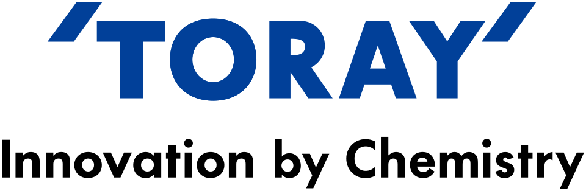

도레이 Toray Industries
도레이(Toray Industries)는 일본에 본사를 둔 다국적 소재 기업이다. 유기합성화학, 고분자화학, 생화학 기술을 바탕으로 산업 제품을 만들며, 탄소섬유와 합성섬유 생산으로 알려져 있다.
최종 업데이트

도레이는 어떤 브랜드인가
도레이는 유기합성화학, 고분자화학, 생화학 기술을 중심으로 산업 제품을 만드는 일본의 다국적 기업이다. 창업 당시의 사업 분야는 섬유와 직물, 플라스틱과 화학 제품이었다.
이후 의약, 바이오기술과 연구개발, 의료 제품, 역삼투막, 전자, IT 제품, 주택과 엔지니어링, 첨단 복합소재로 사업을 넓혔다. 현재 세계 최대의 탄소섬유 생산업체이자 일본 최대의 합성섬유 생산업체이다.
탄소섬유는 보잉 787 여객기의 외부 부품에 폭넓게 쓰인다. 도쿄증권거래소 1부에 상장되어 있으며 TOPIX 100과 닛케이 225 지수의 구성 종목이다.
도레이는 어떻게 시작되고 성장했나
도레이는 1926년 당시 일본의 양대 종합상사 중 하나인 Mitsui Bussan이 Toyo Rayon이라는 이름으로 설립했다. 설립 당시에는 레이온 생산 기술이 없어 Courtaulds와 Du Pont에 기술 구입을 타진했으나 가격이 높았고, 결국 독일 엔지니어링 회사의 설비를 사고 외국인 기술자 약 스무 명을 고용해 사업을 시작했다.
1935년 Du Pont의 Wallace Carothers가 나일론을 발명하자 Mitsui Bussan 뉴욕 지점을 통해 샘플을 입수해 연구했다. 특허 보호 때문에 폴리아미드 합성부터 직접 해결해야 했고, 1941년 기초 연구를 마쳐 나일론 6 소형 공장 건설에 들어갔다.
1943년 가동을 시작했으며 제품은 주로 어망용으로 팔렸다.
도레이의 브랜드 아이덴티티는 무엇인가
세계 최대의 탄소섬유 생산업체이자 일본 최대의 합성섬유 업체로, 섬유에서 출발해 첨단 복합소재까지 사업을 넓힌 소재 기업이다.
도레이의 대표 제품과 서비스는 무엇인가
도레이의 대표 제품은 탄소섬유이며, 보잉 787 여객기의 외부 부품에 널리 쓰인다. 합성섬유와 섬유 사업은 창업 이래의 사업 분야이고, 플라스틱과 화학 제품도 함께 다룬다.
이 밖에 의약, 바이오기술, 의료 제품, 역삼투막, 전자, IT 제품, 주택과 엔지니어링, 첨단 복합소재 분야로 사업을 넓혔다. 1990년대 후반부터 Uniqlo와 협력해 체내 수분을 열로 바꾸는 겨울용 이너웨어 Heattech와, 머리카락 굵기의 10분의 1 섬유로 만든 속건성 여름용 이너웨어 Airism을 공동 개발했다.
도레이는 지금 어떤 상태인가
도레이는 일본, 중국, 미국, 유럽 등 20개 국가와 지역에서 사업을 운영하며 본사는 도쿄 니혼바시 미쓰이 타워에 있다. 2013년 Zoltek 인수를 발표했고, Zoltek은 완전 자회사로 별도 사업 단위로 운영되었다.
2014년에는 프랑스 Lacq에 탄소섬유 전구체인 폴리아크릴로니트릴(PAN) 생산 라인을 열었고, 2018년에는 TenCate Advanced Composites 인수를 발표했다. 2017년 11월에는 2008년부터 2016년까지 품질 데이터를 149건 조작했음을 시인했다.
도레이 로고는 어떻게 변해왔나
자주 묻는 질문
도레이는 어느 나라 브랜드인가요?
도레이는 일본의 에너지·산업재 브랜드입니다.
도레이는 언제 설립되었나요?
도레이는 1926년 설립되었습니다.
도레이의 브랜드 아이덴티티는 무엇인가요?
세계 최대의 탄소섬유 생산업체이자 일본 최대의 합성섬유 업체로, 섬유에서 출발해 첨단 복합소재까지 사업을 넓힌 소재 기업이다.
도레이의 대표 제품은 무엇인가요?
도레이의 대표 제품은 탄소섬유이며, 보잉 787 여객기의 외부 부품에 널리 쓰인다.
도레이는 현재 어떤 상태인가요?
도레이는 일본, 중국, 미국, 유럽 등 20개 국가와 지역에서 사업을 운영하며 본사는 도쿄 니혼바시 미쓰이 타워에 있다.
도레이의 본사는 어디에 있나요?
도레이의 본사는 니혼바시 미쓰이 타워에 있습니다(위키데이터 기준).
도레이의 공식 웹사이트는 어디인가요?
도레이의 공식 웹사이트는 http://www.toray.co.jp/ 입니다.
출처와 검증
도레이 관련 참고: 공식 웹사이트 · 위키데이터 Q168115 · 한국어 위키백과 · 영어 위키백과. 브랜드명은 한글과 원어를 함께 표기하되 데이터에 없는 표기는 만들지 않습니다. 기원 국가·설립연도는 검수된 정의문에서 확인된 값을 우선하고, 없을 때만 공식 웹사이트 URL이 일치하는 위키데이터 개체의 값을 씁니다. 탄생일의 월·일은 위키데이터, 위키백과 정보상자, 본문 가운데 같은 연월로 확인되는 값만 싣고, 출처끼리 다르면 싣지 않습니다. 위키데이터 값은 2026-11-14 기준입니다.